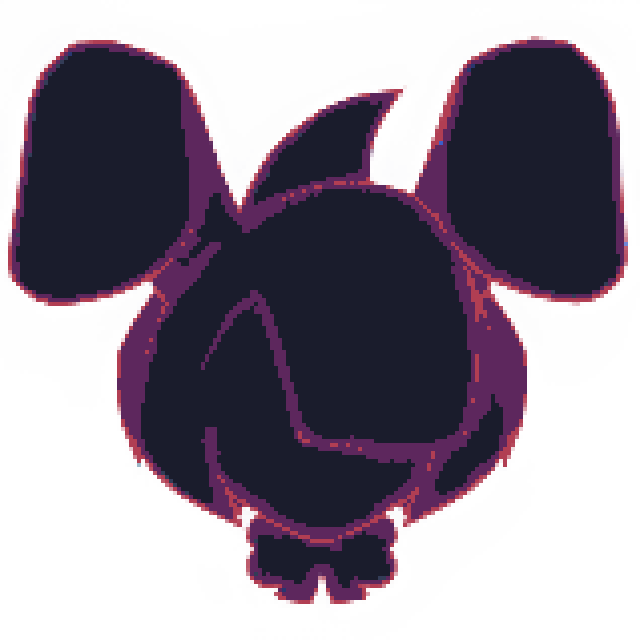
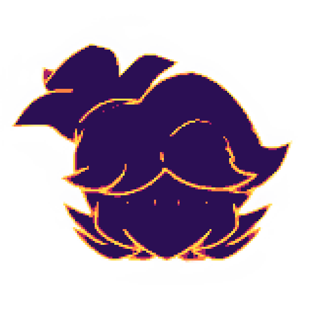
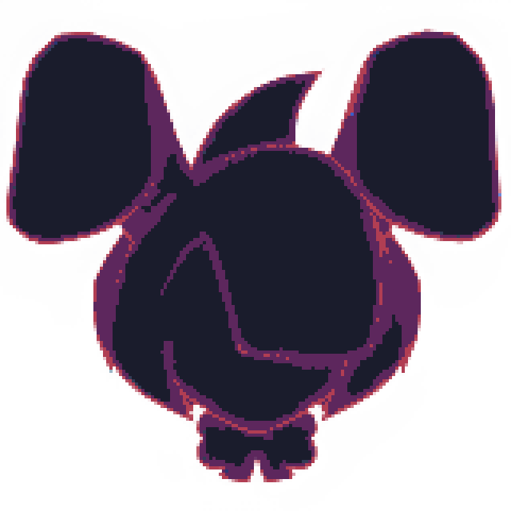
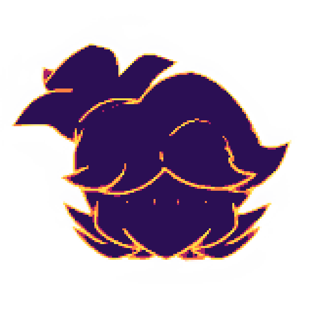

Current
Project
Info
 



Current
Project
Info
Synergy Info
The only project that still lasts
and is being worked on... slowly
That's the first sprite I made for the game. The main character, VANOS, a young boy who went through an apocalypse caused by forces unknown to mankind. When it all happened, he and his friends ran through the forest, trying to escape the void that consumed everything in its path. As they ran, a portal meant to carry another part of the void opened, but before it fully formed, some of them made it through - getting separated and left wandering through the unknown.
The place you woke up.
A place you will remember throughout the game

Second thing I made for the game: the first room, a room where it all started, a place long left to rot, with you now inside it. The name for this place or biome is currently WIP, but I can say that this is an old fortress of someone important for the lore. The glow effects and darkness are meant to make the player feel that the room has been long abandoned. The only thing I'm disappointed with is the lighting, which I wanted to make more pixelated, but my current skills couldn't achieve exactly the look I wanted.
Someone you already knew
People that forgot your existance, yet you want them to remember
Those two are "prototypes" of Vanos' other side friends: 2 of the 3 he lost when he woke up in the new world, Ferra and Rin, female companions of Vanos who, for unknown reasons, have been in this world much longer than our main character, even though they arrived at the same time. Something went wrong, and now he needs to help them remember who they really are. Their memories were wiped, and a new life was formed.